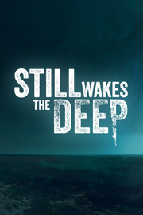

Still Wakes the Deep
Detalles
|  | |
| Tiempo de juego | No Jugado |
| Última actividad | Nunca |
| Añadido | 11/6/2024 15:35:16 |
| Modificado | 11/8/2024 12:00:42 |
| Estado de finalización | No Jugado |
| Librería | Playnite |
| Fuente | 2TB GAS |
| Plataforma | PC (Windows) |
| Fecha de lanzamiento | 6/18/2024 |
| Puntuación de la Comunidad | 86 |
| Puntuación de la Crítica | |
| Puntuación de usuario | |
| Género | Acción |
| Desarrollador | The Chinese Room |
| Editor | Secret Mode |
| Característica | Compat. Total Con Mando HDR Disponible Logros De Préstamo Familiar Subtítulos Disponibles Un Jugador |
| Enlaces | Punto de encuentro Discusiones Guías Noticias Página de la tienda PCGamingWiki Logros |
| Tag | Acción Ambientales Buena trama Ciencia ficción Fantasía oscura Lovecraftianos Narrativos Oscuros Primera persona Sangriento Sigilo Simulador de caminar Supervivencia Supervivencia / Terror Suspense Terror Terror psicológico Un jugador |
Descripción
STILL WAKES THE DEEP es la vuelta al género narrativo de terror de The Chinese Room, los creadores de títulos aclamados por la crítica como Amnesia: A Machine for Pigs, Everybody’s Gone to the Rapture y Dear Esther.
Eres un trabajador de una plataforma petrolífera en alta mar que lucha por su vida en medio de una fuerte tormenta, en un entorno peligroso y en las aguas oscuras y heladas del mar del Norte. Todos los canales de comunicación se han cortado. Todas las salidas han desaparecido. Lo único que queda es enfrentarte al terror incognoscible que ha subido a bordo.


Eres un trabajador de una plataforma petrolífera en alta mar que lucha por su vida en medio de una fuerte tormenta, en un entorno peligroso y en las aguas oscuras y heladas del mar del Norte. Todos los canales de comunicación se han cortado. Todas las salidas han desaparecido. Lo único que queda es enfrentarte al terror incognoscible que ha subido a bordo.
CARACTERÍSTICAS DEL JUEGO
- Explora una plataforma petrolífera en alta mar asombrosamente representada frente a las costas de Escocia en la década de los 70 que evoluciona a lo largo de la historia.
- Maravillosos gráficos, audio y guion obra del galardonado estudio The Chinese Room.
- Elenco de actores de doblaje plagado de estrellas: Alec Newman, Neve McIntosh y más.
- Inquietante banda sonora de lujo de Jason Graves.
- Seis horas de juego aterrador.
- Prepárate para una sinfonía de acción, desazón y asombro.
VIVE EL TERROR
- La inmersiva historia de una catástrofe en una auténtica nación. Lucha por sobrevivir en una plataforma petrolífera del mar del Norte.
- Enfréntate a un enemigo aterrador e implacable.
- Reza para volver a ver a tu familia algún día.
- Experimenta la belleza y la furia del mar mientras destroza una de las estructuras más resistentes de la humanidad y a sus perseverantes trabajadores.
ESCAPA DE LA PLATAFORMA
- Esquiva, distrae y escabúllete para intentar sobrevivir de la mejor manera posible.
- No tienes armas. Tampoco poderes. Solo tienes tu mente y tu determinación.
- Corre, trepa y nada por pasillos inundados y cubiertas exteriores azotadas por la tormenta.
- Lucha por sobrevivir, y recuerda que un mal paso podría ser el último.